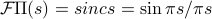

Lecture 8
Okay, I lied, last lecture I didn't actually type in real time; I was watching the course video and I paused it a few times to catch up. This time I'll be TeXing live! I promise!
Review of last time
And….we're off!! We started off with a brief reminder of what we learned last time about the Fourier transform of some basic functions:
The rectangle function has a Fourier transform given by .
This will come up later in filtering.
The triangle function has a Fourier transform of sinc squared.
We found this by doing integration by parts, but we can also justify this by convolution later as we'll see.
The Gaussian function has a fourier transform of itself – remarkable!
We used the normalization
But in general, it'll be a tricky business to find Fourier transforms – integrals of complex exponentials are not simple to compute. You can find tables online; but it's funny to see what you can't do. For instance,
You can't find a Fourier Transform of a cosine. No amount of trickery will let you figure it out – it can't be done in terms of elementary functions, or even numerically!
We'll need to define delta-functions and generaltzed fourier transforms…but we'll talk about it later.
and as we said last time, after going through some examples, we'll go through some general properties of Fourier transforms.
General Properties of F.T.
First thing, we'll exploit the similarity between the Fourier Transform and the inverse F.T. Remember the formulas:
A few comments:
These formulas only differ in a minus sign – they're remarkably similar!
It doesn't matter what you call a variable as long as you know how it functions! It doesn't matter what we call
 and what we call
and what we call  ; it matters where we are in the equation. To be pedantic, we should be specific about what we mean by the notation : it means the function ‘‘the Fourier-transform of
; it matters where we are in the equation. To be pedantic, we should be specific about what we mean by the notation : it means the function ‘‘the Fourier-transform of  ’’ evaluated at a point by performing an integral over .
’’ evaluated at a point by performing an integral over .
Now we can ‘‘weaponize’’ this similarity between and to find some properties of the Fourier transform. Often we use the word duality to describe these relationships. For instance,
Let's see if we can write this without the variables, because as we said earlier, things get confusing when you explicitly call things by their variable names. So to help this out we define a reversed signal that just flips the sign of the argument,
Using the notation helps us write the duality statement in a less confusing way as

i.e., the ‘‘the inverse transform is just the reversed Fourier transform signal’’.
What if we apply these in the other way? That is, what if we want to find the Fourier Transform of the reversed signal,  ? Again, we plug it in to the def'n, we massage the integral by changing integration variables to
? Again, we plug it in to the def'n, we massage the integral by changing integration variables to  ; we cancel the minus sign by flipping the limits of integration… and lo and behold, we end with the inverse Fourier transform of . Hence,
; we cancel the minus sign by flipping the limits of integration… and lo and behold, we end with the inverse Fourier transform of . Hence,
i.e., the Fourier transform of the revesrsed signal is just the inverse fourier transform of the original signal.
Combining things
If we combine these last two results that we got, we find that…
which we can say in words as
‘‘the Fourier transform of the reversed signal is the same as the reversed Fourier transform’’
Again, there's a number of such formulas you can derive, and they all fall under the general category of ‘‘duality formulaas’’…you can muddle up your words, so it's important to be careful with your notation and know what you mean…
One more duality formula
One more. This one has a different flavor than the others; it considers the Fourier Transform of the Fourier Transform (!). That is, the function we're taking the F.T. of is the F.T.
We then massaged some integrals on the board again. We plugged into the definition of the F.T., and then we pulled the minus sign in the exponent next to , and then all of a sudden this looks like an inverse Fourier Transform, but evaluated at instead of at ! So we've just shown that
i.e., if you take the Fourier Transform twice, you end up with the original signal reversed!
Summarizing the duality relations
Three separate formulas, but all say very similar things
Duality is an impressive-sounding word, ‘‘impress your friends, confound your enemies’’
Now this seems all kind of silly symbol-pushing, but we can put it to good use. It turns out the duality relations relate to the symmetry of functions.
Reversals and Symmetry
Remember our definitions for the symmetry of functions:
A function
is even if ; i.e., the graph is symmetric about the y-axis.A function
is odd if ; i.e., the graph is symmetric about the origin.
Now of course we saw this all in, like, eighth grade, but hold your horses, we'll apply some duality to this soon. Let's first consider how these definitions look if we use our new fancy notation to talk bout time-reversed signals:
A function
is even if A function
is odd if
The duality relations allow us to say things about the symmetry of Fourier-transformed functions. To be precise:
If
 is even then its Fourier transform is even
is even then its Fourier transform is evenIf
is odd then its Fourier transform is odd
In other words, the Fourier transform inherents the symmetry of the signal
Now this is all silly and pedantic of course, but the symbol-pushing can get confusing. Prof. Osgoodexplained that historically this has been an issue, so he wanted to explicitly do these arguments in class…
The proofs are a few lines long, but the logic behind this good to remember. Maybe I'll type up something in a box here later to review it.
Why care about symm properties?
The symmetry properties are nice consistency checks for our work – we know if we've started with an even function but then ended with an odd one after we F.T.'ed, then we must have messed up somewhere.
Finding new F.T.'s with symmetry
The symmetry properties can also help us find Fourier transforms of new properties that we didn't know about before! For instance, we can find the F.T. of sinc by applying duality relations and symmetry properties:

(Again, I might go back and explain the argument later…)
Sometimes people call these properties Fourier pairs. So square and sinc are pairs, and triangle and sinc squared are pairs.
A comment from the rigor police:
it's hard to classically talk about whether the integrals converge, where they converge, and what they converge to…so we'll have to be careful, of couse!
More on symmetry: the Fourier coefficients
Remember that if was a real periodic function, then its Fourier coefficients enjoyed the conjugate symmetry property
It turns out that a similar property also holds for Fourier Transforms.Now if we have a general (non-periodic) , its Fourier transform satisfies the property
The proof of this property relies on taking the complex conjugate of the definition of the F.T. The realness of means that it's equal to oits own complex conjugate
Again, this is an important consistency check if you're trying to compute the Fourier transform of a real function.
Plotting Fourier Transforms
There's an important practical consequence of this property for plotting the Fourier transform of a real function: if we take the (complex) magnitude of both sides of the relation, it tells you that that . In words, it tells you that magnitude of the F.T> of a real function is even.
Now how do we plot the Fourier Transform? It's a complex number at any point on the line; typically we only plot the magnitude of that number and just throw away the information of the phase. So the fact that  is even means that its plot is symmetric – we only need to plot the positive-frequency components, since the negative frequency components have the same magnitude.
is even means that its plot is symmetric – we only need to plot the positive-frequency components, since the negative frequency components have the same magnitude.
This is the reason why spectrum analyzers only plot positive frequencies!
Looking ahead.
Shifting, stretching, convolutions…